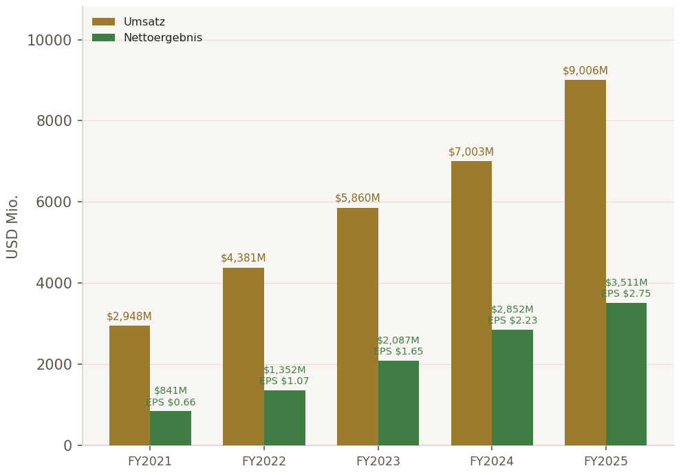
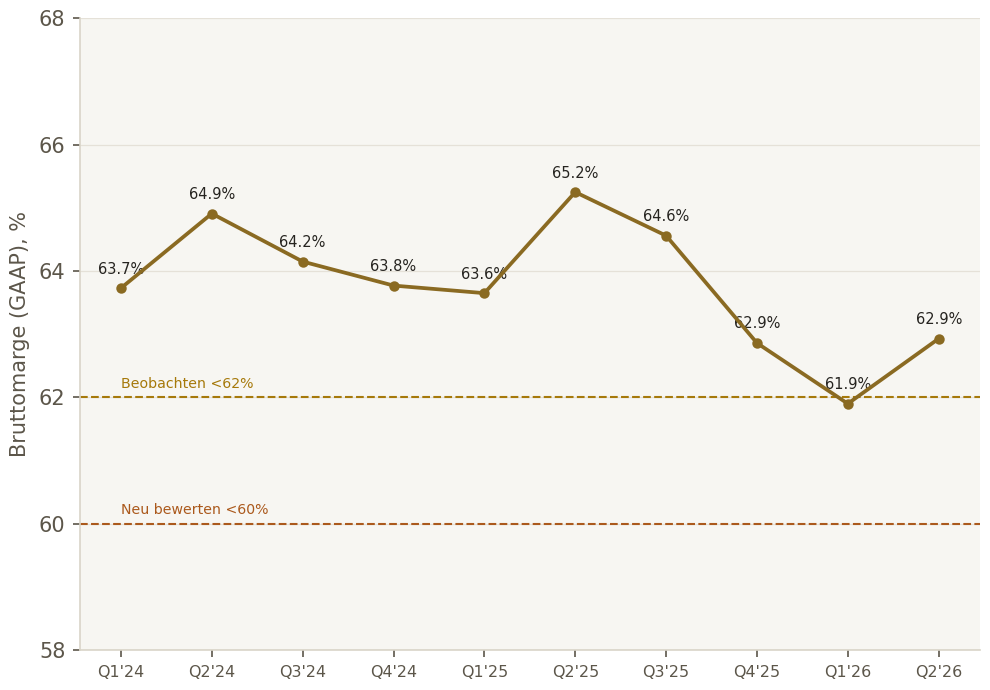
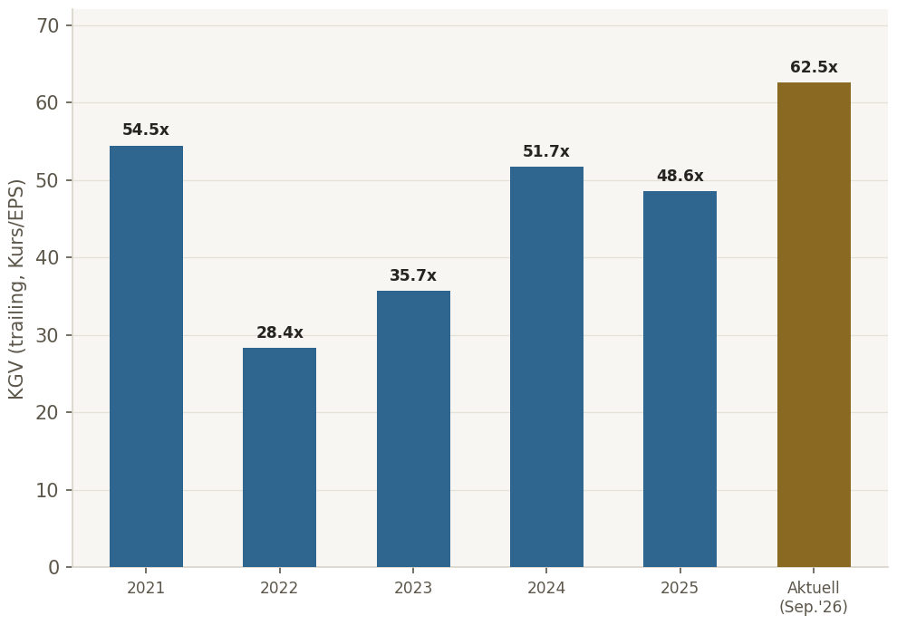
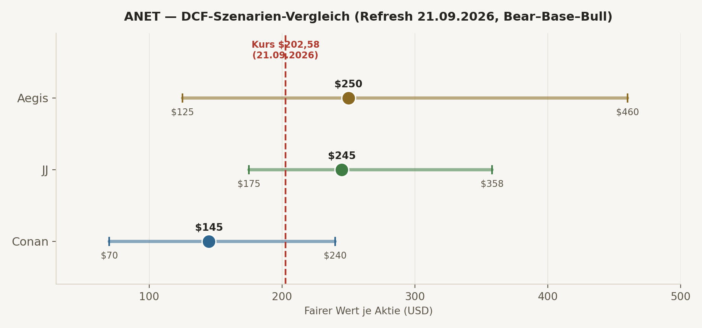
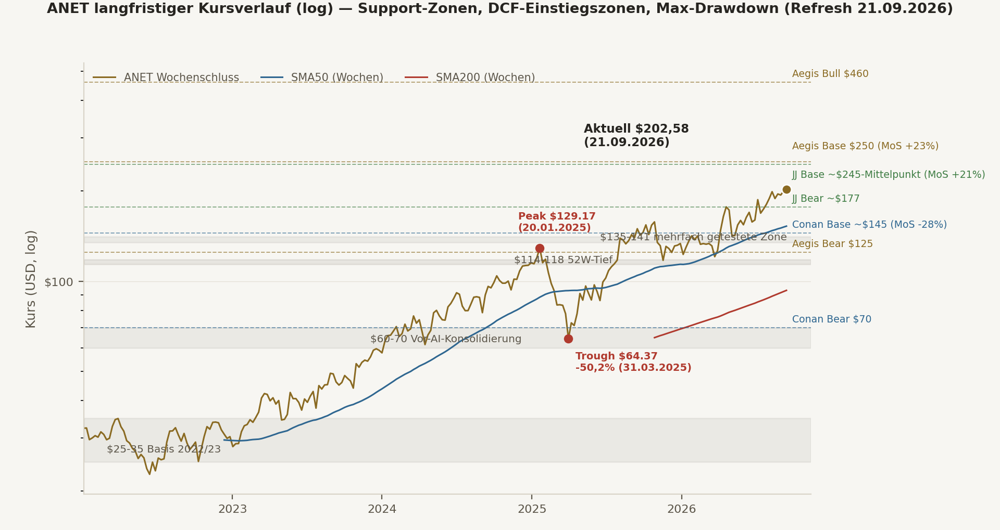
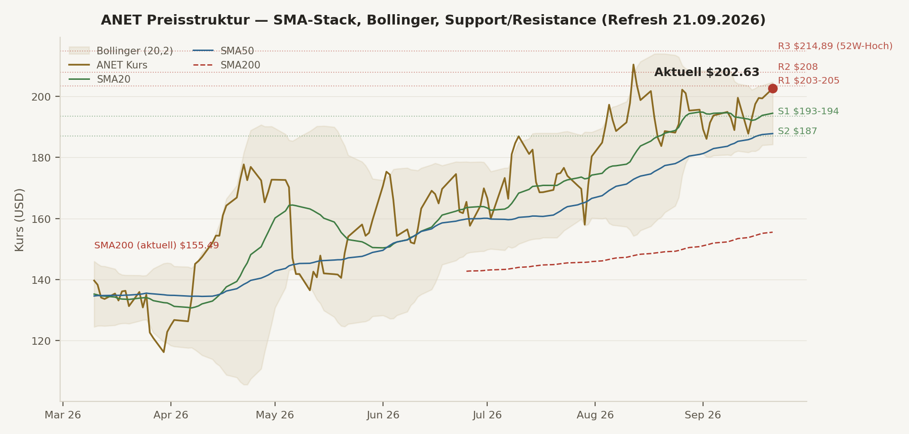
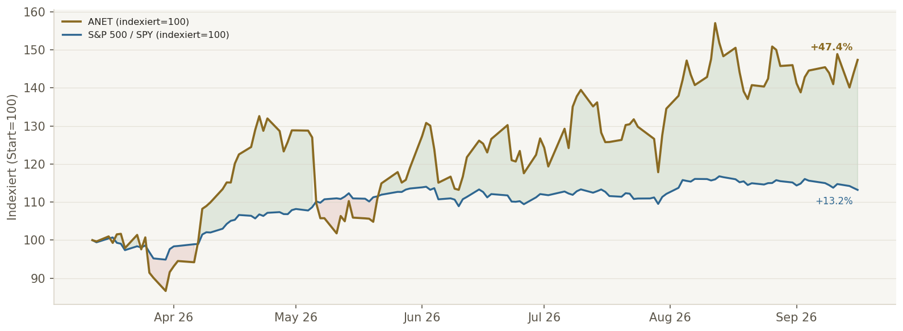

Was neu ist. Zwei echte, primärquellenbelegte Entwicklungen seit dem 17.09.: (1) ANET tritt heute, vor Handelsbeginn, in den S&P 100 ein — einer von vier Titeln (mit Dell, Palo Alto Networks, SanDisk), die aus dem breiteren S&P 500 aufrücken; Nike ist einer von vier Titeln, die den Index verlassen (keine strikte 1:1-Paarung, wie eine erste eigene Verkürzung nahelegte — von Conan korrigiert und gegen die S&P-DJI-Primärquelle verifiziert). Ein Index-/Flow-Katalysator, kein operativer. (2) Die dritte Guidance-Anhebung des Jahres: FY2026-Umsatzausblick jetzt ~$12,6 Mrd. (+40% YoY), $2,1 Mrd. über dem ursprünglichen Analyst-Day-Ziel. Q2 2026 erstmals über $3 Mrd. Quartalsumsatz, Etherlink-AI-Switches jetzt bei >100 Kunden.
Das operative Geschäft bleibt makellos, jetzt mit noch mehr Rückenwind. DNA-Check, KSF-Scorecard und Bilanzstruktur (Seite 3-4) sind gegenüber dem 17.09. unverändert — kein neues Quartal in 4 Tagen. Die Guidance-Anhebung bestätigt den bereits dokumentierten Wachstumstrend, ändert aber nicht dessen Substanz.
Die Bewertungsfrage hat sich verschärft, nicht geklärt. JJ reagiert auf die 40%-Dynamik mit einer spürbaren DCF-Anhebung (Base $214→$240-250, Rating tendiert Richtung KAUFEN). Conan bleibt bei der konservativen 65/35-Gordon/Exit-Gewichtung und hebt nur moderat an (Base $130-135→$142-148, Rating bleibt NEUTRAL/WATCHLIST). Der Dissens ist strukturell derselbe wie am 17.09. — er hat sich nur auf ein höheres Kursniveau verschoben.
Eigene Korrektur, transparent benannt. Eine ursprünglich per WebSearch gefundene Insider-Verkaufsangabe (Kenneth Duda, ~$142/Aktie am 17.09.) erwies sich beim direkten SEC-Form-4-Abruf als nicht verifizierbar und wurde verworfen — der Kurs lag zu diesem Zeitpunkt bei $195-205. Tatsächliche September-Insider-Aktivität: ausschließlich non-cash Trust-Umschichtungen im Rahmen eines bestehenden 10b5-1-Plans.
| Teildimension | JJ | Conan | Aegis |
|---|---|---|---|
| Business-Qualität | 🟢 | 🟢 | 🟢 |
| Moat/Wettbewerbsposition | 🟢 (Trend: stärker) | 🟡 (Trend: AI-Back-end schwächer) | 🟡 |
| Leitrisiko NVIDIA | 🟡 gemanagt | 🟠 wesentlich | 🟡 |
| Bewertung (Base-FV vs. Kurs $202,58) | 🟢 $240-250 (deutlich über Kurs, angehoben von $214) | 🔴 $142-148 (weiter unter Kurs, moderat angehoben von $130-135) | 🟢 $250 (über Kurs, von $245) |
| Wachstumsverlässlichkeit | 🟢 (bestätigt: 3. Guidance-Anhebung) | 🟡 | 🟢 |
BEOBACHTEN
10J-Exit-Multiple Base $250 (von $245) · zwischen JJ und Konsens
Tendenz KAUFEN
Base $240-250 deutlich über Kurs · DCF wegen +40%-Guidance angehoben
NEUTRAL/WATCHLIST
Score 76/100 (von 74) · Base $142-148 weiter unter Kurs
| Kriterium | JJ | Conan | Status |
|---|---|---|---|
| ROIC | 49,9% | >200% (verzerrt, Cash-lastig) | ✅ konvergent (elite) |
| FCF-Marge (SBC-ber.) | ~53,7% | ~44,1% | ✅ konvergent (elite, Methodendifferenz) |
| Piotroski F-Score | 4/9 | ~6/9 | 🟡 Divergenz, beide "branchentypisch unkritisch" |
| EPS-CAGR (5J) | 39,9% | ~40% | ✅ konvergent |
| Bruttomarge | 63,0% | ~63,0% | ✅ konvergent |
| Op. Margin (GAAP) | 49,9% (Non-GAAP) | ~43,1% (GAAP) | ✅ konvergent (Basis-Differenz erklärt) |
| Revenue-CAGR (5J) | 26,9% | ~32% | ✅ konvergent (elite, FY26 lt. Guidance jetzt +40%) |
| Net-Debt/EBITDA | 0,00 (netto cash) | -2,9x (netto cash) | ✅ konvergent |
| Capex/Umsatz | 1,44% | ~1,4% | ✅ konvergent (sehr kapitalleicht) |
| SBC/Umsatz (3J-Trend) | steigend absolut | ~5,1%→4,9%→4,8% (leicht fallend) | ✅ konvergent (unkritisch) |
| Key Success Factor | Status |
|---|---|
| High-Speed-Ethernet-Roadmap (800G/1.6T) | ✅ DEFENSIV |
| Software-/OS-Konsistenz & Automatisierung (EOS) | ✅ DEFENSIV |
| Hyperscaler-Design-Wins & Co-Development | 🟡 defensiv, aber konzentriert |
| Supply-Chain-Ausführung/Time-to-Deploy | 🟡 IN ARBEIT |
| Wettbewerbsposition/Moat gegen NVIDIA — siehe Komponenten unten | 🟡 IN ARBEIT |
| Diversifikation jenseits Microsoft/Meta | 🟡 IN ARBEIT (Etherlink jetzt >100 Kunden — positiver Frühindikator) |
| Komponente | Stärke | Trend |
|---|---|---|
| Software/EOS-Ökosystem | Sehr stark | Stärker |
| Hardware-AI-Back-end | Stark, umkämpft | Schwächer (Conan) / Stärker (JJ) — Dissens unverändert |
| Switching-Costs/Kundenbindung | Mittel-stark | Stabil-steigend |
| Skalen-/Ökosystemvorteile (Hyperscaler-Co-Dev) | Mittel | Ambivalent (Kundenmacht) |
| Offene Standards vs. NVIDIA-vertikale Integration | Mittel | Strukturelle Schlacht, offen |
| Cash + Marketable Securities | $13,34 Mrd. |
| Explizite Finanzschulden | Nahe null |
| Current Ratio | ~3,0x |
| Share-Count-Trend (Dez.24→Dez.25→Jul.26) | 1,2613 Mrd. → 1,2565 Mrd. → 1,2612 Mrd. (netto leicht rückläufig, H1 2026 keine Buybacks) |
| Buyback-Autorisierung offen (30.06.2026) | $817,9 Mio. |
Management-Score: Conan 5,5/7, JJ 6/7 — konvergent stark. Management-Tonalität (beide unabhängig): Arista positioniert sich NICHT als NVIDIA-Konkurrent bei GPUs, sondern als Netzwerk-Partner für heterogene/offene AI-Fabrics. Explizite Segmentierung von Management selbst: bei vollständig vertikal integrierten NVIDIA-Stacks (Scale-up/NVLink-nah) "sehr geringe Beteiligung" für Arista — bei Scale-out/Scale-across bessere Position. Bewertung: ehrlich statt euphorisch, bestätigt aber genau das strukturelle Risiko. Die dritte Guidance-Anhebung des Jahres (jetzt $12,6 Mrd. FY26) untermauert, dass diese Positionierung operativ funktioniert, ohne die NVIDIA-Frage selbst zu beantworten.
Top-2-Konzentration 2025: ~42% (Kunde A 26%, Kunde B 16% laut 10-K — Microsoft/Meta gemäß Vorjahresangaben). Microsoft: FY27-Capex-Wachstum YoY bestätigt, CY2026-Capex-Erwartung ~$190 Mrd. (davon ~$25 Mrd. reine Preiseffekte). Meta: 2026-Capex-Guidance $130-145 Mrd., explizit für AI-/Core-Infrastruktur, Q2 2026 Capex $31,08 Mrd. Neu (21.09.): Etherlink-AI-Switches bedienen jetzt >100 Kunden (von 4-5 in 2024) — ein erster quantitativer Beleg für Diversifikation jenseits der Top-2, auch wenn Umsatzanteil-Details dazu noch nicht veröffentlicht sind. Status: 🟠 wesentliches, aber datenbelegtes Struktur-Risiko, kein akutes Ausschlusskriterium.


| Quartal | EPS tatsächlich | EPS-Konsens (Guidance-Proxy) | Überraschung |
|---|---|---|---|
| Q3 2024 | $0,60 | $0,52 | +15,4% |
| Q4 2024 | $0,59 | $0,57 | +3,5% |
| Q1 2025 | $0,65 | $0,59 | +10,2% |
| Q2 2025 | $0,73 | $0,65 | +12,3% |
| Q3 2025 | $0,75 | $0,72 | +4,2% |
| Q4 2025 | $0,82 | $0,75 | +9,3% |
| Q1 2026 | $0,87 | $0,81 | +7,7% |
| Q2 2026 | $1,02 | $0,89 | +14,6% |

Aktuelles KGV (~64x trailing bei $202,58, von 62,5x am 17.09.) bleibt am oberen Rand der eigenen 5-Jahres-Historie — nur 2021 (54,5x, vor der 2022er-Korrektur) war annähernd vergleichbar hoch, 2022 fiel das Multiple auf 28,4x. Die Guidance-Anhebung stützt das höhere Multiple fundamental, ändert aber nichts an der "anspruchsvoll bewertet"-Einschätzung (Seite 2).
Bereits an anderer Stelle abgedeckt (keine Duplizierung): Peer-Vergleich → Seite 7. Entscheidungsübersicht → Investment-Card Seite 2 / Executive-Verdict-Matrix Seite 12. Bilanz → Seite 4. Debt-Maturity: nicht anwendbar (Finanzschulden nahe null, siehe Seite 4).
| Quelle | Bear | Base | Bull | Methode |
|---|---|---|---|---|
| Aegis | $125 ($116) | $250 ($245) | $460 ($449) | 10J explizit, Exit-Multiple (18-34x) — kleine Anpassung, war bereits vorwegnehmend |
| JJ | $175-180 ($158,55) | $240-250 ($214,28) | $350-365 ($310,48) | 5J explizit, CAGR-Annahmen wegen +40%-Guidance auf 30-32% (Base) angehoben |
| Conan | $70 ($65) | $142-148 ($130-135) | $235-245 ($220) | Gordon 65%/Exit-Multiple 35% gewichtet — Gewichtung unverändert bestätigt |
Conan (einzige KI mit >30%-TV-Divergenz): hält explizit an der 65/35-Gewichtung zugunsten Gordon fest, auch nach der Guidance-Anhebung. Begründung unverändert: (1) unklare Terminal-Wettbewerbsposition gegen NVIDIA-Bundles in Jahr 10+, (2) beobachtete Margin-Kompression durch Large-Customer-Discounts, (3) Wachstumsnormalisierungs-Risiko — explizit bestätigt: die Guidance-Anhebung verbessere primär Jahre 1-4 des Modells, nicht die Terminal-Frage. Regelkonform, keine nachträgliche Anpassung "näher an den Kurs".
JJ: Gordon-Growth und Exit-Multiple lagen am 17.09. <3% auseinander, Zirkularitäts-Sperre war nicht nötig — JJs kürzerer 5-Jahres-Horizont bleibt eine dokumentierte Abweichung vom Haus-Standard (10J für Wachstumscompounder), jetzt mit höheren CAGR-Annahmen kombiniert.
| Known | Unknown (recherchierbar) | Unknowable |
|---|---|---|
| Umsatz/Margen/Cash/Kundenkonzentration ~42%, bestätigte FY26-Guidance $12,6 Mrd., S&P-100-Aufnahme | Exakter 2026/27-Wallet-Share bei Microsoft/Meta, tatsächliche Spectrum-X-Verdrängung je Cluster, Umsatzanteil der >100 Etherlink-Kunden jenseits Top-2 | Ob offene Ethernet-Fabrics über 10J gegen vertikale GPU-Stacks dominieren, langfristige AI-Nachfrage 2030+ |

| 5J-Umsatz-CAGR \ Exit-Multiple | 19,6x | 23,1x | 26,6x |
|---|---|---|---|
| 12% | $129 | $147 | $165 |
| 17% | $157 | $179 | $201 |
| 22% | $190 | $216 | $244 |
| Unternehmen | Fwd. KGV | EV/EBITDA | EV/FCF | Op.-Margin |
|---|---|---|---|---|
| Arista (ANET) | ~50er | ~45-46x | ~44-46x | ~43% |
| Cisco (CSCO) | 21,4x | 24,2x | 35,4x | 25,4% |
| Broadcom (AVGO) | 19,6x | 31,7x | 42,0x | 48,8% |
| NVIDIA (NVDA) | ~23,6x | ~22,1x | ~47,0x | ~60% |
| HPE | 12,2x | 12,8x | 21,2x | niedrig-mittel |

Eigene Berechnung (Aegis, Twelve-Data-Wochenschlusskurse seit 2016, [LIVE]-Primärquelle, unverändert): größter historischer Drawdown -50,2%, Peak $129,17 (20.01.2025) → Trough $64,37 (31.03.2025). These danach intakt? Ja — Kurs bei $202,58 (21.09.2026), weiter oberhalb des Peaks von Jan. 2025. Chart oben zeigt SMA50/SMA200 (Wochen), Support-Zonen und die Einstiegszonen/Margin-of-Safety aus dem aktualisierten DCF-Cross-Check (Seite 6-7): bei $202,58 unterbewertet für Aegis (Base $250, MoS +23,4%, von +19,4%) und JJ (Base ~$245-Mittelpunkt, MoS ~+20,9%, von +7,8% — größter Sprung, spiegelt die DCF-Anhebung), weiterhin ambitioniert für Conan (Base ~$145, MoS -28,4%, von -49,1% — Lücke schrumpft, bleibt aber groß). Drawdown↔Einstiegszonen: ein von heute aus gerechneter, gleich großer -50,2%-Drawdown ($202,58→~$101) würde den Kurs klar unter Aegis' ($125) und JJs ($175-180) neue Bear-Cases drücken, aber weiterhin über Conans konservativerem Bear-Case ($70).


JJ: Verdikt von HALTEN/BEOBACHTEN zu HALTEN/KAUFEN bei Schwäche (Golden-Cross, MACD-Buy-Signal, Kurs über allen SMAs). Conan: Verdikt bleibt HALTEN/BEOBACHTEN mit leicht bullischem Bias — kein Chasing am oberen Bollinger-Band. Aegis-Einordnung: beide sehen dieselben Indikatoren, ziehen aber unterschiedliche Handlungsschlüsse — spiegelt exakt den fundamentalen DCF-Dissens dieses Reports. 0/3 Thesis-Break-Säulen gebrochen, kein aktives VETO. TA überschreibt nie die TMR-These (Seite 2/6/12).
| Kernannahme | Confidence + Beleg | Beobachtbarer KPI | Eigener Kipppunkt |
|---|---|---|---|
| Arista bleibt führender offener Ethernet-Fabric-Anbieter für Hyperscaler/AI | Mittel-hoch — EOS/Roadmap/Wachstum stützen, NVIDIA greift strukturell an | AI-/Cloud-Titan-Revenue, 1,6T-Deployments, Data-Center-Switching-Share | Anheben: AI-Fabric-Wins außerhalb MSFT/Meta · Senken: NVIDIA gewinnt bestehende ANET-Designs |
| AI-Capex bei Microsoft/Meta bleibt hoch genug für ANET-Wachstum 2026/27 | Hoch, jetzt gestärkt — dritte Guidance-Anhebung bestätigt anhaltende Nachfrage | MSFT/META-Capex-Guidance, Network-Infrastructure-Kommentare | Anheben: FY27-Capex weiter netzwerkbetont · Senken: Capex-Repriorisierung weg von Ethernet |
| Margen bleiben strukturell außergewöhnlich trotz Large-Customer-Discounts | Mittel — Op.-Margin stark, aber GM fiel bereits wegen Kundenmix | GAAP-GM, Non-GAAP-Op.-Margin, Produktmix | 🟡 <62% GM (2Q) · 🟠 <60% · 🔴 <58%+Pricing-Druck |
| Kundenkonzentration bleibt kontrollierbar | Mittel, leicht gestärkt — >100 Etherlink-Kunden als Frühindikator | Top-1/Top-2-Anteil, Customer-Sector-Revenue | Anheben: Top-2 <35% bei >20% Wachstum · Senken: ein Top-Kunde reduziert/verschiebt Architektur |
| FCF-Qualität bleibt hoch, nicht primär Deferred-Revenue-Timing-getrieben | Mittel — FCF stark, aber Deferred Revenue/Acceptance-Terms steigen | CFO-NI-Abgleich, Deferred Revenue, Inventory | Anheben: FCF-Marge >35% ohne überproportionale Deferred-Revenue-Zunahme · Senken: FCF <30% oder Write-downs |
| Bewertung bleibt durch Wachstum rechtfertigbar | Niedrig-mittel — Kurs verlangt weiterhin Bull-nahe Ausführung, jetzt bei höherem Niveau | 5J-Wachstumspfad, EV/FCF, Forward-EPS-Revisionen | Anheben: 5J-Wachstum >20% sichtbar (FY26 lt. Guidance bereits erfüllt) · Senken: Wachstum <15% bei EV/FCF >35x |
Unverändert seit 17.09.: NVIDIA laut IDC in Q1 2026 auf Platz 1 im Datacenter-Ethernet-Switching (Markt +39,8% auf $15,4 Mrd.) — struktureller, mehrjähriger Risikofaktor. NVIDIA bündelt GPU+NIC+Switch+Software zu einem vertikal integrierten AI-Fabric-Stack; Arista bleibt bei offenen, heterogenen Ethernet-Fabrics stark. Kein Existenzrisiko, aber ein reales Multiple-/Wachstumspfad-Risiko — durch die Guidance-Anhebung nicht entschärft, da diese primär Jahre 1-4 betrifft (siehe Seite 6).
Eigene Korrektur: eine ursprünglich per WebSearch gefundene Angabe ("Kenneth Duda verkaufte ~10k Aktien am 17.09. zu ~$142") konnte beim direkten SEC-Form-4-Abruf nicht verifiziert werden und wurde verworfen — der Kurs lag zu diesem Zeitpunkt bei $195-205, $142 ist damit unplausibel (vermutlich Verwechslung mit einer älteren Juni/Juli-Preistranche). Tatsächliche September-Aktivität laut SEC-Direktabruf: ausschließlich non-cash Trust-Umschichtungen (8./10.09., 10b5-1-Plan vom 11.03.2026). Muster insgesamt unverändert: überwiegend planmäßige 10b5-1-Verkäufe (Ullal, Bechtolsheim, Duda in früheren Monaten), kein Panikmuster, aber auch kein Insider-Buying dokumentiert.
| Kennzahl | 🟡 Beobachten | 🟠 Neu bewerten | 🔴 These gefährdet |
|---|---|---|---|
| Bruttomarge (GAAP) | <62% (2Q) | <60% | <58% + Pricing-Druck |
| NVIDIA-Marktanteil (Ethernet-Switching) | weitere Anteilsgewinne, ANET wächst noch | NVIDIA gewinnt bei bestehenden ANET-Kunden | ANET verliert mehrere AI-Fabric-Design-Wins |
| Kundenkonzentration Top-2 | bleibt >40%, Wachstum hoch | ein Top-Kunde reduziert deutlich | Top-Kunde fällt unter Run-Rate (Architekturwechsel) |
| Working-Capital/Deferred Revenue | wächst schneller als Umsatz | FCF-Marge <30% (Timing) | materielle Write-downs/Retouren |
| Termin | Positivsignal | Warnsignal |
|---|---|---|
| S&P-100-Aufnahme (21.09.2026) — eingetreten | Passive Nachfrage/Liquidität steigt (Flow, kein Cashflow-Effekt) | – |
| ⭐ Q3 2026 Earnings (~Nov. 2026) — LEITKATALYSATOR, unverändert nächster harter Datenpunkt | Umsatz ≥$3,3 Mrd., GM stabil >62%, starker FY27-Kommentar, evtl. vierte Guidance-Anhebung | schwacher Q4-Ausblick, GM-Druck, vage NVIDIA-Aussagen |
| Microsoft/Meta nächste Earnings | Capex bleibt netzwerkinfrastrukturlastig | Capex verschiebt sich zu GPU-only/vertikalen Bundles |
| 1,6T-Produkt-Updates 2027 | mehrere Hyperscaler-Deployments | Ramp verzögert, NVIDIA dominiert neue Cluster |
Alle Kernkennzahlen [LIVE]/[VERIFIED] über SEC-10-Q/10-K-Primärquellen bzw. Aggregator-Quellen mit Websuche, gegenseitig plausibilisiert. Neuer Fund (21.09.): eine per WebSearch gefundene Insider-Verkaufsangabe (Duda, ~$142) erwies sich beim direkten SEC-Form-4-Abruf als unplausibel (Kurs lag bei $195-205) und wurde verworfen, nicht stillschweigend übernommen — Beispiel dafür, warum Einzelfakten aus KI-Suche bei spezifischen Zahlen gegen Primärquellen geprüft werden müssen. S&P-100-Paarung ("ANET ersetzt Nike") ebenfalls präzisiert: keine 1:1-Zuordnung laut S&P-DJI-Primärquelle.
| Anker-Bereich | 6-8 Qualitäts-Kern (nahe Ausnahme-Compounder-Schwelle) |
| Ausgangswert | 8 von 6-8 — DNA/Bilanz/Moat-Substanz elite, jetzt zusätzlich durch dritte Guidance-Anhebung + S&P-100-Aufnahme gestützt |
| Aktive Mali | Bewertungsdeckel (KGV ~50-64x), Kundenkonzentration ~42%, NVIDIA-Leitrisiko — als korrelierte Gruppe behandelt (alle senken Sicherheitsmarge) |
| Aktive Deckel | Konfidenz max. 🟡 (echte 3-Wege-DCF-Divergenz jetzt $70-460, weiter statt enger) |
| Finaler Score | 7-8/10, Konfidenz 🟡 MITTEL (tendenziell gestärkt ggü. 17.09.) |
Zwei echte Katalysatoren (S&P-100-Aufnahme, dritte Guidance-Anhebung auf $12,6 Mrd.) bestätigen die operative Stärke, klären aber die zentrale Bewertungsfrage nicht — sie verschieben die faire-Wert-Spanne nach oben ($70-460 statt $65-449), ohne sie zu verengen. JJ tendiert nach dem Refresh Richtung KAUFEN, Conan bleibt bei NEUTRAL/WATCHLIST mit derselben disziplinierten Begründung wie am 17.09. Champions-Fit weiterhin ja, sofortige hohe Konviktion weiterhin nein — der Kurs bewegt sich nahe des 52-Wochen-Hochs, exakt an der Stelle, wo diese Frage am meisten wiegt.